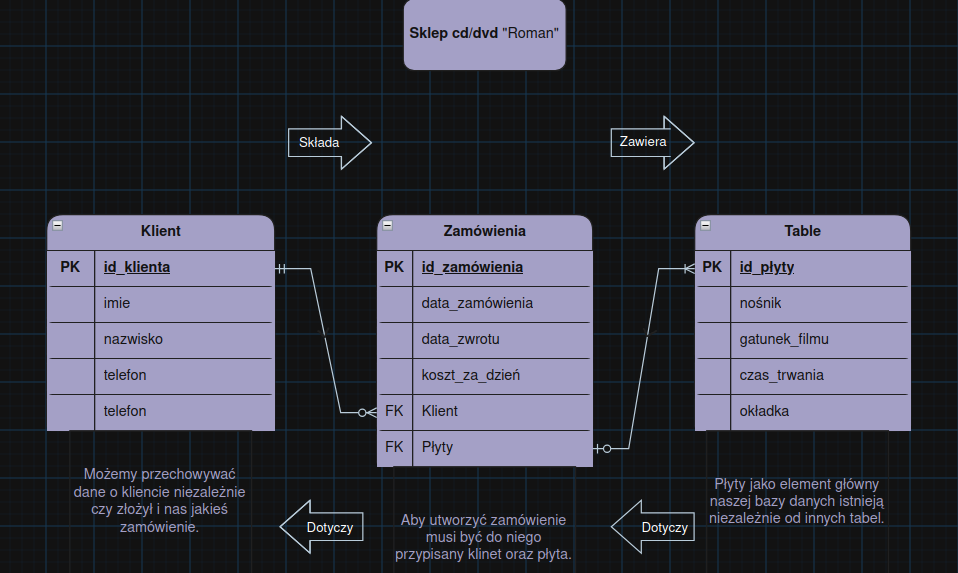

Projektowanie Baz Danych i diagramy ERD
Zasady projektowania bazy danych:
- planowanie bazy danych,
- tworzenie modelu konceptualnego (Diagram ERD),
- transformacja modelu konceptualnego na model relacyjny,
- proces normalizacji,
- wybór struktur i określenie zasad dostępu do bazy.
Diagram ERD - To konceptualne przedstawienie pomysłu na Bazę danych.
Konceptualne projektowanie bazy danych to konstruowanie schematu danych niezależnego od wybranego modelu danych, docelowego systemu zarządzania bazą danych.
Na diagram ERD składają się:
w
- zbiór encji
- atrybuty encji
- związki zachodzące między encjami
- Nazwa i kierunek
- Stopień związku (Typ Relacji)
- Wymogi i opcjonalność
Diragram ERD spotyka się w różnych notacjach takich jak:
- Martina
- Bachmana
- Chena
- IDEF1X
Przykładowy diagram ERD:
Przykładowy diagram ERD:
